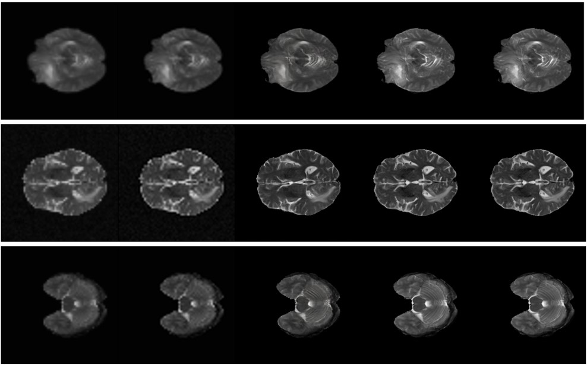
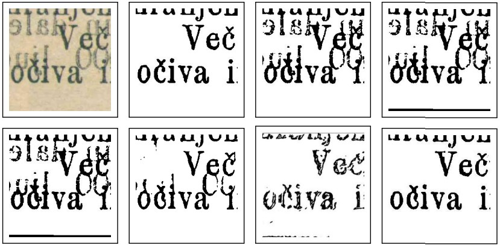
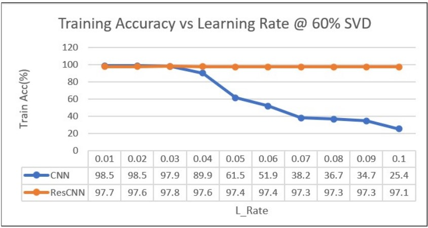

|
Avirup Dey
I am a 1st-year Computer Science PhD student at the University of Bath, advised by Prof. Vinay Namboodiri. I work on controllable generative models for facial animation.
I completed my B.E. in Electronics and Communication Engineering in 2023, from Jadavpur University,
India.
As an undergrad, I was a research assistant at DVLP Lab (under CMATER), Jadavpur University under Prof. Nibaran
Das, where I worked on deep learning models for historical document analysis and cell imaging. As a recipient
of the prestigious Mitacs Globalink Research Internship, I spent the Summer of 2022 at Ontario Tech University,
where I worked under Prof. Mehran Ebrahimi on the development of deep learning models for Cross-Modal MRI Super-Resolution.
I have also worked as a research assistant at the IVPR Group under Prof. Ananda Shankar Chowdhury, where I explored Semantic
Segmentation for Neuromorphic Vision.
Email /
CV /
Twitter /
Github
|
|
|
Research
I'm interested in Computer Vision, Machine Learning and Image Processing. Much of my recent work revolves around the application of deep generative models.
|
|

|
MTSR-MRI: Combined Modality Translation and Super-Resolution of Magnetic Resonance Images
Avirup Dey,
Mehran Ebrahimi
MIDL, 2023
code
/
pre-print
We use a combination of deep super-resolution (SR) and image tranlation (MT) models for cross-model resolution enhancement of 2D MRI scans.
|
|

|
Variational Augmentation for Enhancing Historical Document Image Binarization
Avirup Dey,
Mita Nasipuri,
Nibaran Das
ICVGIP, 2022
code
/
paper
Historical Document Image Binarization is a well-known segmentation problem in image processing.
Despite ubiquity, traditional thresholding algorithms achieved limited success on severely degraded
document images. With the advent of deep learning, several segmentation models were proposed that made
significant progress in the field but were limited by the unavailability of large training datasets.
To mitigate this problem, we have proposed a novel two-stage framework -- the first of which comprises a
generator that generates degraded samples using variational inference and the second being a CNN-based
binarization network that trains on the generated data. We evaluated our framework on a range of DIBCO
datasets, where it achieved competitive results against previous state-of-the-art methods.
|
|

|
ResCNN: An Alternative Implementation of Convolutional Neural Networks
Avirup Dey,
Sarosij Bose
IEEE UPCON, 2021
code
/
paper
/
slides
Our work demonstrates the effectiveness of expressing kernel convolution as a matrix-matrix product and incorporating SVD in CNNs.
This opens up possibilities for alternative techniques that can enhance the performance and training efficiency of deep learning models.
|
|